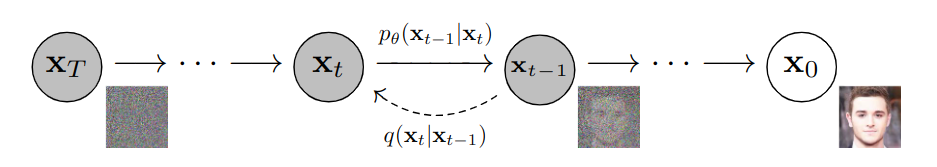

This module presents the work: Denoising Diffusion Probabilistic Models by Jonathan Ho, Ajay Jain, Pieter Abbeel (2020). It starts with a description of the algorithm, then provides some notebooks to implement it on MNIST and CIFAR10 and finishes with some technical details.
Table of Contents

Given a schedule β 1 < β 2 < ⋯ < β T \beta_1<\beta_2<\dots <\beta_T β 1 < β 2 < ⋯ < β T
q ( x t ∣ x t − 1 ) = N ( x t ; 1 − β t x t − 1 , β t I ) q ( x 1 : T ∣ x 0 ) = ∏ t = 1 T q ( x t ∣ x t − 1 ) \begin{aligned} q(x_t|x_{t-1}) &= \mathcal{N}(x_t; \sqrt{1-\beta_t}x_{t-1},\beta_t I)\\ q(x_{1:T}|x_0) &= \prod_{t=1}^T q(x_t|x_{t-1}) \end{aligned} q ( x t ∣ x t − 1 ) q ( x 1 : T ∣ x 0 ) = N ( x t ; 1 − β t x t − 1 , β t I ) = t = 1 ∏ T q ( x t ∣ x t − 1 ) We define α t = 1 − β t \alpha_t = 1-\beta_t α t = 1 − β t α t ‾ = ∏ i = 1 t α i \overline{\alpha_t} = \prod_{i=1}^t\alpha_i α t = ∏ i = 1 t α i
x t = α t x t − 1 + 1 − α t ϵ t − 1 , with ϵ t − 1 ∼ N ( 0 , I ) = α t α t − 1 x t − 2 + α t ( 1 − α t − 1 ) ϵ t − 2 + 1 − α t ϵ t − 1 = α t α t − 1 x t − 2 + 1 − α t α t − 1 ϵ ~ t \begin{aligned} x_t &= \sqrt{\alpha_t} x_{t-1} + \sqrt{1-\alpha_t}\epsilon_{t-1},\text{ with }\epsilon_{t-1}\sim\mathcal{N}(0,I)\\ &= \sqrt{\alpha_t\alpha_{t-1}} x_{t-2} +\sqrt{\alpha_t(1-\alpha_{t-1})}\epsilon_{t-2}+\sqrt{1-\alpha_t}\epsilon_{t-1}\\ &= \sqrt{\alpha_t\alpha_{t-1}} x_{t-2} + \sqrt{1-\alpha_t\alpha_{t-1}}\tilde{\epsilon}_{t} \end{aligned} x t = α t x t − 1 + 1 − α t ϵ t − 1 , with ϵ t − 1 ∼ N ( 0 , I ) = α t α t − 1 x t − 2 + α t ( 1 − α t − 1 ) ϵ t − 2 + 1 − α t ϵ t − 1 = α t α t − 1 x t − 2 + 1 − α t α t − 1 ϵ ~ t Hence, we have
x t = α ‾ t x 0 + 1 − α ‾ t ϵ \begin{aligned} x_t = \sqrt{\overline{\alpha}_t}x_0 + \sqrt{1-\overline{\alpha}_t}\epsilon \end{aligned} x t = α t x 0 + 1 − α t ϵ class DDPM (nn.Module):
def __init__ (self, network, num_timesteps,
beta_start=0.0001 , beta_end=0.02 , device=device ):
super (DDPM, self ).__init__()
self .num_timesteps = num_timesteps
self .betas = torch.linspace(beta_start, beta_end,
num_timesteps, dtype=torch.float32).to(device)
self .alphas = 1.0 - self .betas
self .alphas_cumprod = torch.cumprod(self .alphas, axis=0 )
self .network = network
self .device = device
self .sqrt_alphas_cumprod =
self .alphas_cumprod ** 0.5
self .sqrt_one_minus_alphas_cumprod =
(1 - self .alphas_cumprod) ** 0.5
def add_noise (self, x_start, noise, timesteps ):
s1 = self .sqrt_alphas_cumprod[timesteps]
s2 = self .sqrt_one_minus_alphas_cumprod[timesteps]
s1 = s1.reshape(-1 ,1 ,1 ,1 )
s2 = s2.reshape(-1 ,1 ,1 ,1 )
return s1 * x_start + s2 * noise
def reverse (self, x, t ):
return self .network(x, t)Note that the law q ( x t − 1 ∣ x t , x 0 ) q(x_{t-1}|x_t,x_0) q ( x t − 1 ∣ x t , x 0 )
q ( x t − 1 ∣ x t , x 0 ) = N ( x t − 1 ; μ ( x t , x 0 ) , γ t I ) , \begin{aligned} q(x_{t-1}|x_t,x_0) = \mathcal{N}(x_{t-1};\mu(x_t,x_0), \gamma_t I), \end{aligned} q ( x t − 1 ∣ x t , x 0 ) = N ( x t − 1 ; μ ( x t , x 0 ) , γ t I ) , with
μ ( x t , x 0 ) = α t ( 1 − α ‾ t − 1 ) 1 − α ‾ t x t + β t α ‾ t − 1 1 − α ‾ t x 0 γ t = 1 − α ‾ t − 1 1 − α ‾ t β t \begin{aligned} \mu(x_t,x_0) &= \frac{\sqrt{\alpha_t}(1-\overline{\alpha}_{t-1})}{1-\overline{\alpha}_{t}}x_t + \frac{\beta_t\sqrt{\overline{\alpha}_{t-1}}}{1-\overline{\alpha}_{t}}x_0\\ \gamma_t &= \frac{1-\overline{\alpha}_{t-1}}{1-\overline{\alpha}_{t}}\beta_t \end{aligned} μ ( x t , x 0 ) γ t = 1 − α t α t ( 1 − α t − 1 ) x t + 1 − α t β t α t − 1 x 0 = 1 − α t 1 − α t − 1 β t but we know that x 0 = 1 / α ‾ t ( x t − 1 − α ‾ t ϵ ) x_0 = 1/\sqrt{\overline{\alpha}_t}\left( x_t-\sqrt{1-\overline{\alpha}_t}\epsilon\right) x 0 = 1 / α t ( x t − 1 − α t ϵ )
μ ( x t , x 0 ) = 1 α t ( x t − 1 − α t 1 − α ‾ t ϵ ) = μ ( x t , t ) , \begin{aligned} \mu(x_t,x_0) &= \frac{1}{\sqrt{\alpha_t}}\left( x_t-\frac{1-\alpha_t}{\sqrt{1-\overline{\alpha}_t}}\epsilon\right) = \mu(x_t,t), \end{aligned} μ ( x t , x 0 ) = α t 1 ( x t − 1 − α t 1 − α t ϵ ) = μ ( x t , t ) , where we removed the dependence in x 0 x_0 x 0 t t t
The idea is to approximate q ( x t − 1 ∣ x t ) q(x_{t-1}|x_t) q ( x t − 1 ∣ x t )
p θ ( x t − 1 ∣ x t ) = N ( x t − 1 ; μ θ ( x t , t ) , β t I ) \begin{aligned} p_{\theta}(x_{t-1}|x_t) = \mathcal{N}(x_{t-1}; \mu_{\theta}(x_t,t), \beta_t I) \end{aligned} p θ ( x t − 1 ∣ x t ) = N ( x t − 1 ; μ θ ( x t , t ) , β t I ) and we approximate q ( x 0 : T ) q(x_{0:T}) q ( x 0 : T )
p ( x 0 : T ) = p ( x T ) ∏ t = 1 T p θ ( x t − 1 ∣ x t ) , \begin{aligned} p(x_{0:T}) = p(x_T)\prod_{t=1}^T p_{\theta}(x_{t-1}|x_t), \end{aligned} p ( x 0 : T ) = p ( x T ) t = 1 ∏ T p θ ( x t − 1 ∣ x t ) , where p ( x T ) ∼ N ( 0 , I ) p(x_T) \sim \mathcal{N}(0,I) p ( x T ) ∼ N ( 0 , I ) β t \beta_t β t
The neural network is trained by maximizing the usual Variational bound:
E q ( x 0 ) ln p θ ( x 0 ) ≥ E q ( x 0 : T ) [ ln q ( x 1 : T ∣ x 0 ) p θ ( x 0 : T ) ] = E q [ KL ( q ( x T ∣ x 0 ) ∥ p ( x T ) ) + ∑ t = 2 T KL ( q ( x t − 1 ∣ x t , x 0 ) ∥ p θ ( x t − 1 ∣ x t ) ) − ln p θ ( x 0 ∣ x 1 ) ] = L T + ∑ t = 2 T L t − 1 + L 0 . \begin{aligned} \mathbb{E}_{q(x_0)} \ln p_{\theta}(x_0) &\geq \mathbb{E}_{q(x_{0:T})}\left[ \ln\frac{q(x_{1:T}|x_0)}{p_\theta(x_{0:T})}\right]\\ &=\mathbb{E}_q\left[ \text{KL}\left( q(x_T|x_0)\|p(x_T)\right)+\sum_{t=2}^T\text{KL}\left( q(x_{t-1}|x_t,x_0)\|p_{\theta}(x_{t-1}|x_t)\right)-\ln p_{\theta}(x_0|x_1)\right]\\ &= L_T +\sum_{t=2}^T L_{t-1}+L_0. \end{aligned} E q ( x 0 ) ln p θ ( x 0 ) ≥ E q ( x 0 : T ) [ ln p θ ( x 0 : T ) q ( x 1 : T ∣ x 0 ) ] = E q [ KL ( q ( x T ∣ x 0 ) ∥ p ( x T ) ) + t = 2 ∑ T KL ( q ( x t − 1 ∣ x t , x 0 ) ∥ p θ ( x t − 1 ∣ x t ) ) − ln p θ ( x 0 ∣ x 1 ) ] = L T + t = 2 ∑ T L t − 1 + L 0 . Note that L T L_T L T θ \theta θ
L t − 1 = E q [ 1 2 β t 2 ∥ μ θ ( x t , t ) − μ ( x t , t ) ∥ 2 ] \begin{aligned} L_{t-1} = \mathbb{E}_q\left[ \frac{1}{2\beta_t^2}\|\mu_\theta(x_t,t) -\mu(x_t,t)\|^2\right] \end{aligned} L t − 1 = E q [ 2 β t 2 1 ∥ μ θ ( x t , t ) − μ ( x t , t ) ∥ 2 ] Now, we make the change of variable:
μ θ ( x t , t ) = 1 α t ( x t − 1 − α t 1 − α ‾ t ϵ θ ( x t , t ) ) , \begin{aligned} \mu_\theta(x_t,t) = \frac{1}{\sqrt{\alpha_t}}\left( x_t-\frac{1-\alpha_t}{\sqrt{1-\overline{\alpha}_t}}\epsilon_\theta(x_t,t)\right), \end{aligned} μ θ ( x t , t ) = α t 1 ( x t − 1 − α t 1 − α t ϵ θ ( x t , t ) ) , so that we have
∥ μ θ ( x t , t ) − μ ( x t , t ) ∥ 2 = ( 1 − α t ) 2 1 − α ‾ t ∥ ϵ − ϵ θ ( α ‾ t x 0 + 1 − α ‾ t ϵ , t ) ∥ 2 \begin{aligned} \|\mu_\theta(x_t,t) -\mu(x_t,t)\|^2 = \frac{(1-\alpha_t)^2}{1-\overline{\alpha}_t}\|\epsilon - \epsilon_\theta(\sqrt{\overline{\alpha}_t}x_0 + \sqrt{1-\overline{\alpha}_t}\epsilon, t)\|^2 \end{aligned} ∥ μ θ ( x t , t ) − μ ( x t , t ) ∥ 2 = 1 − α t ( 1 − α t ) 2 ∥ ϵ − ϵ θ ( α t x 0 + 1 − α t ϵ , t ) ∥ 2 Empirically, the prefactor is removed in the loss and instead of summing over all t t t τ ∈ [ 0 , T − 1 ] \tau\in [0,T-1] τ ∈ [ 0 , T − 1 ]
ℓ ( θ ) = E τ E ϵ [ ∥ ϵ − ϵ θ ( α ‾ τ x 0 + 1 − α ‾ τ ϵ , τ ) ∥ 2 ] \begin{aligned} \ell(\theta) = \mathbb{E}_\tau\mathbb{E}_\epsilon \left[ \|\epsilon - \epsilon_\theta(\sqrt{\overline{\alpha}_\tau}x_0 + \sqrt{1-\overline{\alpha}_\tau}\epsilon, \tau)\|^2\right] \end{aligned} ℓ ( θ ) = E τ E ϵ [ ∥ ϵ − ϵ θ ( α τ x 0 + 1 − α τ ϵ , τ ) ∥ 2 ]
for step, batch in enumerate (dataloader):
batch = batch[0 ].to(device)
noise = torch.randn(batch.shape).to(device)
timesteps = torch.randint(0 , num_timesteps, (batch.shape[0 ],)).long().to(device)
noisy = model.add_noise(batch, noise, timesteps)
noise_pred = model.reverse(noisy, timesteps)
loss = F.mse_loss(noise_pred, noise)
optimizer.zero_grad()
loss.backward()
optimizer.step()For sampling, we need to simulate the reversed diffusion (Markov chain) starting from x T ∼ N ( 0 , I ) x_T\sim \mathcal{N}(0,I) x T ∼ N ( 0 , I )
x t − 1 = 1 α t ( x t − 1 − α t 1 − α ‾ t ϵ θ ( x t , t ) ) + β t ϵ , with ϵ ∼ N ( 0 , I ) . \begin{aligned} x_{t-1} = \frac{1}{\sqrt{\alpha_t}}\left( x_t-\frac{1-\alpha_t}{\sqrt{1-\overline{\alpha}_t}}\epsilon_\theta(x_t,t)\right)+\sqrt{\beta_t}\epsilon,\text{ with } \epsilon\sim\mathcal{N}(0,I). \end{aligned} x t − 1 = α t 1 ( x t − 1 − α t 1 − α t ϵ θ ( x t , t ) ) + β t ϵ , with ϵ ∼ N ( 0 , I ) .
def step (self, model_output, timestep, sample ):
t = timestep
coef_epsilon = (1 -self .alphas)/
self .sqrt_one_minus_alphas_cumprod
coef_eps_t = coef_epsilon[t].reshape(-1 ,1 ,1 ,1 )
coef_first = 1 /self .alphas ** 0.5
coef_first_t = coef_first[t].reshape(-1 ,1 ,1 ,1 )
pred_prev_sample =
coef_first_t*(sample-coef_eps_t*model_output)
variance = 0
if t > 0 :
noise = torch.randn_like(model_output).to(self .device)
variance = ((self .betas[t] ** 0.5 ) * noise)
pred_prev_sample = pred_prev_sample + variance
return pred_prev_sample(J. Ho, A. Jain, P. Abbeel 2020)
Given a schedule β 1 < β 2 < ⋯ < β T \beta_1<\beta_2<\dots <\beta_T β 1 < β 2 < ⋯ < β T forward diffusion process is defined by: q ( x t ∣ x t − 1 ) = N ( x t ; 1 − β t x t − 1 , β t I ) q(x_t|x_{t-1}) = \mathcal{N}(x_t; \sqrt{1-\beta_t}x_{t-1},\beta_t I) q ( x t ∣ x t − 1 ) = N ( x t ; 1 − β t x t − 1 , β t I ) q ( x 1 : T ∣ x 0 ) = ∏ t = 1 T q ( x t ∣ x t − 1 ) q(x_{1:T}|x_0) = \prod_{t=1}^T q(x_t|x_{t-1}) q ( x 1 : T ∣ x 0 ) = ∏ t = 1 T q ( x t ∣ x t − 1 )
With α t = 1 − β t \alpha_t = 1-\beta_t α t = 1 − β t α t ‾ = ∏ i = 1 t α i \overline{\alpha_t} = \prod_{i=1}^t\alpha_i α t = ∏ i = 1 t α i ϵ ∼ N ( 0 , I ) \epsilon\sim\mathcal{N}(0,I) ϵ ∼ N ( 0 , I )
x t = α ‾ t x 0 + 1 − α ‾ t ϵ . \begin{aligned} x_t = \sqrt{\overline{\alpha}_t}x_0 + \sqrt{1-\overline{\alpha}_t}\epsilon. \end{aligned} x t = α t x 0 + 1 − α t ϵ . The law
q ( x t − 1 ∣ x t , ϵ ) q(x_{t-1}|x_t,\epsilon) q ( x t − 1 ∣ x t , ϵ ) is explicit:
q ( x t − 1 ∣ x t , ϵ ) = N ( x t − 1 ; μ ( x t , ϵ , t ) , γ t I ) q(x_{t-1}|x_t,\epsilon) = \mathcal{N}(x_{t-1};\mu(x_t,\epsilon,t), \gamma_t I) q ( x t − 1 ∣ x t , ϵ ) = N ( x t − 1 ; μ ( x t , ϵ , t ) , γ t I ) with,
μ ( x t , ϵ , t ) = 1 α t ( x t − 1 − α t 1 − α ‾ t ϵ ) and, γ t = 1 − α ‾ t − 1 1 − α ‾ t β t \begin{aligned} \mu(x_t,\epsilon, t) = \frac{1}{\sqrt{\alpha_t}}\left( x_t-\frac{1-\alpha_t}{\sqrt{1-\overline{\alpha}_t}}\epsilon\right)\text{ and, } \gamma_t = \frac{1-\overline{\alpha}_{t-1}}{1-\overline{\alpha}_{t}}\beta_t \end{aligned} μ ( x t , ϵ , t ) = α t 1 ( x t − 1 − α t 1 − α t ϵ ) and, γ t = 1 − α t 1 − α t − 1 β t Training : to approximate
the reversed diffusion q ( x t − 1 ∣ x t ) q(x_{t-1}|x_t) q ( x t − 1 ∣ x t ) by a neural network given by
p θ ( x t − 1 ∣ x t ) = N ( x t − 1 ; μ θ ( x t , t ) , β t I ) p_{\theta}(x_{t-1}|x_t) = \mathcal{N}(x_{t-1}; \mu_{\theta}(x_t,t), \beta_t I) p θ ( x t − 1 ∣ x t ) = N ( x t − 1 ; μ θ ( x t , t ) , β t I ) and
p ( x T ) ∼ N ( 0 , I ) p(x_T) \sim \mathcal{N}(0,I) p ( x T ) ∼ N ( 0 , I ) , we maximize the usual Variational bound:
E q ( x 0 ) ln p θ ( x 0 ) ≥ L T + ∑ t = 2 T L t − 1 + L 0 with, L t − 1 = E q [ 1 2 σ t 2 ∥ μ θ ( x t , t ) − μ ( x t , ϵ , t ) ∥ 2 ] . \begin{aligned} \mathbb{E}_{q(x_0)} \ln p_{\theta}(x_0) &\geq L_T +\sum_{t=2}^T L_{t-1}+L_0 \text{ with, }L_{t-1} = \mathbb{E}_q\left[ \frac{1}{2\sigma_t^2}\|\mu_\theta(x_t,t) -\mu(x_t,\epsilon,t)\|^2\right]. \end{aligned} E q ( x 0 ) ln p θ ( x 0 ) ≥ L T + t = 2 ∑ T L t − 1 + L 0 with, L t − 1 = E q [ 2 σ t 2 1 ∥ μ θ ( x t , t ) − μ ( x t , ϵ , t ) ∥ 2 ] . With the change of variable:
μ θ ( x t , t ) = 1 α t ( x t − 1 − α t 1 − α ‾ t ϵ θ ( x t , t ) ) , \begin{aligned} \mu_\theta(x_t,t) = \frac{1}{\sqrt{\alpha_t}}\left( x_t-\frac{1-\alpha_t}{\sqrt{1-\overline{\alpha}_t}}\epsilon_\theta(x_t,t)\right), \end{aligned} μ θ ( x t , t ) = α t 1 ( x t − 1 − α t 1 − α t ϵ θ ( x t , t ) ) , ignoring the prefactor and sampling
τ \tau τ instead of summing over all
t t t , the loss is finally:
ℓ ( θ ) = E τ E ϵ [ ∥ ϵ − ϵ θ ( α ‾ τ x 0 + 1 − α ‾ τ ϵ , τ ) ∥ 2 ] \begin{aligned} \ell(\theta) = \mathbb{E}_\tau\mathbb{E}_\epsilon \left[ \|\epsilon - \epsilon_\theta(\sqrt{\overline{\alpha}_\tau}x_0 + \sqrt{1-\overline{\alpha}_\tau}\epsilon, \tau)\|^2\right] \end{aligned} ℓ ( θ ) = E τ E ϵ [ ∥ ϵ − ϵ θ ( α τ x 0 + 1 − α τ ϵ , τ ) ∥ 2 ] Sampling : to simulate the reversed diffusion with the learned
ϵ θ ( x t , t ) \epsilon_\theta(x_t,t) ϵ θ ( x t , t ) starting from
x T ∼ N ( 0 , I ) x_T\sim \mathcal{N}(0,I) x T ∼ N ( 0 , I ) , iterate for
t = T , … , 1 t=T,\dots, 1 t = T , … , 1 :
x t − 1 = 1 α t ( x t − 1 − α t 1 − α ‾ t ϵ θ ( x t , t ) ) + β t ϵ , with ϵ ∼ N ( 0 , I ) . \begin{aligned} x_{t-1} = \frac{1}{\sqrt{\alpha_t}}\left( x_t-\frac{1-\alpha_t}{\sqrt{1-\overline{\alpha}_t}}\epsilon_\theta(x_t,t)\right)+\sqrt{\beta_t}\epsilon,\text{ with } \epsilon\sim\mathcal{N}(0,I). \end{aligned} x t − 1 = α t 1 ( x t − 1 − α t 1 − α t ϵ θ ( x t , t ) ) + β t ϵ , with ϵ ∼ N ( 0 , I ) .
The training of this notebook on colab takes approximately 20 minutes.
ddpm_nano_empty.ipynb is the notebook where you code the DDPM algorithm (a simple UNet is provided for the network ϵ θ ( x , t ) \epsilon_\theta(x,t) ϵ θ ( x , t )
The training of this notebook on colab takes approximately 20 minutes (so do not expect high-quality pictures!). Still, after finetuning on specific classes, we see that the model learns features of the class.
With a bit more training (100 epochs), you can get results like this:
Note that the Denoising Diffusion Probabilistic Model is the same for MNIST and CIFAR10, we only change the UNet learning to reverse the noise. For CIFAR10, we adapt the UNet provided in Module 9b . Indeed, you can still use the code provided here for DDPM with other architectures like more complex ones with self-attention like this Unet coded by lucidrains which is the one used in the original paper.
In the paper, the authors used Exponential Moving Average (EMA) on model parameters with a decay factor of 0.999 0.999 0 . 9 9 9